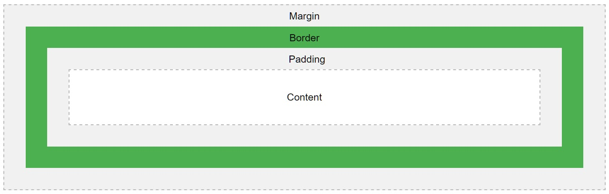

A box model (modelo de caixa) no CSS é utilizada quando estamos falando de design e layout de uma page.
A box model é uma caixa que se envolve em todos os elementos de HTML, sendo constituída de: margens, bordas, espaçamentos internos e o conteúdo do elemento. A imagem abaixo ilustra o citado:
1) Content: é o conteúdo em si do elemento HTML;
2) Padding: é o espaçamento interno do elemento, a área em volta do conteúdo, sendo ele transparente;
3) Border: é a borda que fica entre o elemento HTML e seu espaçamento interno (caso exista alguma padding definido);
4) Margin: é a margem do elemento, a área fora da borda, sendo ele transparente.
OBS¹: a outline não está presente na box model justamente por ela tecnicamente não fazer parte da caixa, uma vez que ela irá se sobrepor a margem, isto é, caso eu possua uma margem de 20px e um contorno de 20px, este contorno irá passar por cima de toda a minha margem, fazendo com que visualmente não haja margem nenhuma no meu elemento.